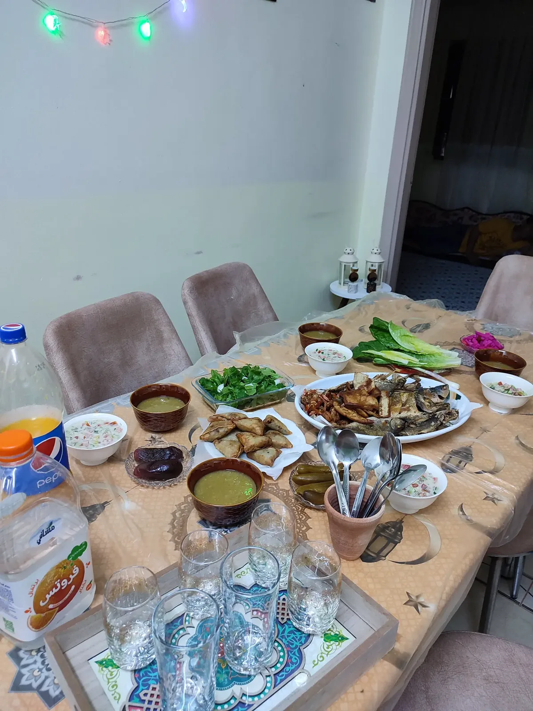

Authentic Iftar Dinner
Join a real Aqaba family to break the fast at sunset. Experience traditional home-cooked Sayadieh, Mansaf, and Qatayef in an intimate, authentic setting.
20 JOD per person
Learn More
Ramadan Cooking Class
Learn to prepare traditional Ramadan dishes from a local chef. Discover the secrets behind authentic Jordanian cuisine and take home recipes.
Discover Classes
Ramadan Food Tour
Explore Aqaba's hidden food spots during Ramadan. Visit local markets, taste street food, and learn about Jordanian food culture from a local guide.
Explore ToursWhat to Know About Ramadan in Aqaba
- Ramadan 2026 Dates: Expected to begin February 17-18 and end March 18-19
- Iftar Time: Sunset varies daily; typically between 5:30 PM - 6:00 PM
- Daytime Hours: Most locals fast during daylight; restaurants in tourist areas remain open
- Evening Atmosphere: Streets come alive after sunset with vibrant markets and celebrations
- Cultural Respect: Dress modestly and avoid eating/drinking in public during daylight hours
- Best Time to Visit: Evening and night time for the full Ramadan experience
Why Choose Local Experiences During Ramadan?
Ramadan is more than just dates and prayer times—it's a celebration of community, hospitality, and shared meals. By choosing authentic local experiences, you:
- Connect with real Jordanian families and their traditions
- Taste home-cooked food prepared with love, not commercial kitchens
- Understand the true meaning of Ramadan hospitality
- Support local families and businesses
- Create lasting memories and friendships
- Experience Aqaba as locals do, not as tourists
Ramadan Iftar Menu
Your 20 JOD experience includes:
- 🌙 Dates & Water: The traditional way to break the fast
- 🍲 Traditional Soup: Warming and nourishing
- 🐟 Main Course: Sayadieh (Aqaba's signature fish and rice) or Mansaf (Jordan's national dish)
- 🍮 Ramadan Desserts: Qatayef (stuffed pancakes) and other traditional sweets
- ☕ Beverages: Arabic coffee and tea
Book Your Ramadan Experience Today
Limited spots available to ensure an intimate, authentic experience. Reserve your place now to celebrate Ramadan 2026 with a real Aqaba family.